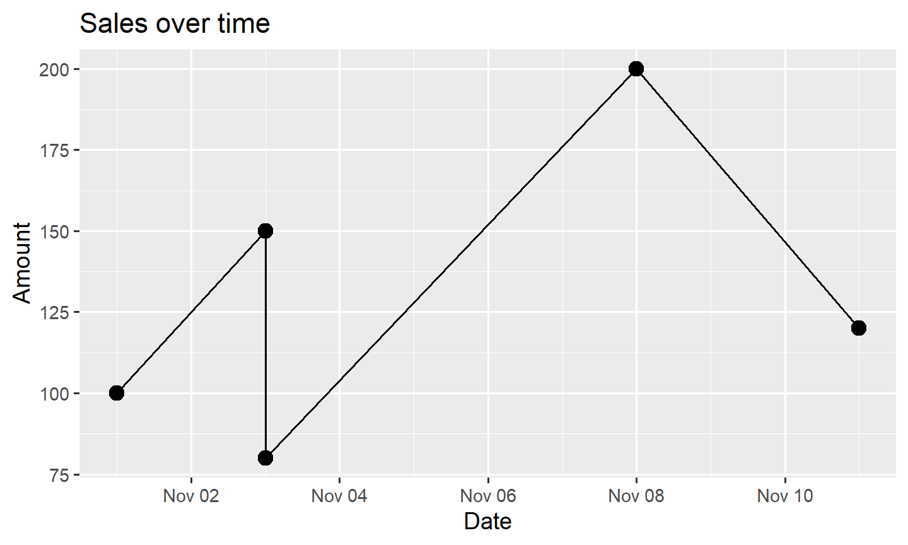

10.2 lubridate: Dates and Times
A string that looks like a date is still text. Parse it, then pull out pieces, add calendar time, and keep a duration distinct from a period.
1. A string is not a date
A column can look like a date and still be text. Text does not know that November comes after October, and you cannot subtract two strings to get a number of days.
x <- "2026-11-11"
class(x)
## [1] "character"
Turn the string into a date or a datetime before you filter, subtract, or plot. Three tools do that conversion.
- Base R:
as.Date(),as.POSIXct(),strptime(). - readr:
parse_date(),parse_datetime(),parse_time(). - lubridate:
ymd(),mdy(),dmy(),ymd_hms(), and the helpers that come after the parse.
All three can turn a string into a date. lubridate is the one that also makes the next steps short: pull out the month, add two calendar months, change the time zone.
tidyverse attaches readr and lubridate. Load lubridate yourself so the parsers are obvious.
library(tidyverse)
library(lubridate)
2. Date types in R
A date type is either a moment on the calendar or a length of time. The two tables below are the ones you will meet in this course.
A moment: a day, an instant, or a clock time
| Type | What it stores | Class |
|---|---|---|
| Date | A calendar day, with no time of day | Date |
| Date-time | One instant, stored as seconds since 1970-01-01 00:00:00 UTC | POSIXct, POSIXt |
| Date-time, as pieces | The same kind of instant, stored as a list of year, month, day, hour, and the rest | POSIXlt, POSIXt |
| Time of day | A clock time with no date, such as 14:30:00 | hms, difftime |
Date, POSIXct, and POSIXlt are base R. hms comes from the hms package, which readr loads. For a column in a data frame, use POSIXct. strptime() returns POSIXlt. as_date() turns a datetime into a Date. as_datetime() turns a Date into a POSIXct. Section 5 shows both.
class(as.Date("2026-11-11"))
class(as.POSIXct("2026-11-11 14:30:00", tz = "UTC"))
class(strptime("2026-11-11 14:30:00", format = "%Y-%m-%d %H:%M:%S", tz = "UTC"))
class(parse_time("14:30:00"))
## [1] "Date"
## [1] "POSIXct" "POSIXt"
## [1] "POSIXlt" "POSIXt"
## [1] "hms" "difftime"
ymd("2017-01-31")
ymd_hms("2017-01-31 20:11:59")
## [1] "2017-01-31"
## [1] "2017-01-31 20:11:59 UTC"
The first is a Date. The second is a POSIXct, printed in UTC.
A length of time
These types do not name a day. They say how long something lasts.
| Type | What it stores | Class | How you get one |
|---|---|---|---|
| Difference | How far apart two dates are | difftime |
end - start |
| Duration | An exact number of seconds | Duration |
ddays(1) |
| Period | A calendar unit. A day can be 23 or 25 hours when the clocks change. | Period |
days(1), months(1), years(1) |
| Interval | The span between two instants | Interval |
interval(start, end) |
difftime is base R. Duration, period, and interval are lubridate. Section 7 subtracts two dates. Section 8 shows why a duration and a period can land on different days.
class(as.Date("2026-11-11") - as.Date("2026-11-01"))
class(ddays(1))
class(days(1))
class(interval(ymd("2026-11-01"), ymd("2026-11-11")))
## [1] "difftime"
## [1] "Duration"
## attr(,"package")
## [1] "lubridate"
## [1] "Period"
## attr(,"package")
## [1] "lubridate"
## [1] "Interval"
## attr(,"package")
## [1] "lubridate"
3. Base R
No extra package. You tell R the layout of the string with format.
as.Date()
Use this for a calendar date.
x <- "2026-11-11"
d <- as.Date(x)
d
class(d)
## [1] "2026-11-11"
## [1] "Date"
ISO text, year-month-day, is the default. Any other layout needs format.
as.Date("11/25/2026", format = "%m/%d/%Y")
as.Date("25-Nov-2026", format = "%d-%b-%Y")
## [1] "2026-11-25"
## [1] "2026-11-25"
| Symbol | Meaning | Example |
|---|---|---|
%Y |
Four-digit year | 2026 |
%y |
Two-digit year | 26 |
%m |
Month number | 11 |
%d |
Day of the month | 25 |
%b |
Abbreviated month | Nov |
%B |
Full month | November |
%H |
Hour, 00–23 | 14 |
%I |
Hour, 01–12 | 02 |
%p |
AM or PM | PM |
%M |
Minute | 30 |
%S |
Second | 45 |
%m is the month. %M is the minute.
as.POSIXct()
Use this when the string has a date and a time. tz is the time zone.
dt <- as.POSIXct(
"2026-11-11 14:30:00",
format = "%Y-%m-%d %H:%M:%S",
tz = "UTC"
)
dt
class(dt)
## [1] "2026-11-11 14:30:00 UTC"
## [1] "POSIXct" "POSIXt"
When x is already a POSIXct, as.Date(x) takes the calendar day in UTC. Pass tz to take the day in another zone. as_date() uses the zone stored on x. The evening example is in section 5.
strptime()
strptime() also parses a datetime, and it returns a POSIXlt.
lt <- strptime(
"11/25/2026 14:30",
format = "%m/%d/%Y %H:%M",
tz = "UTC"
)
lt
class(lt)
## [1] "2026-11-25 14:30:00 UTC"
## [1] "POSIXlt" "POSIXt"
POSIXct stores the instant as one number of seconds. POSIXlt stores a list of pieces: year, month, day, hour, and the rest. For a column in a data frame, use POSIXct.
format() goes back to text
format() prints a date in a layout you choose. The result is a character string, not a Date.
d <- as.Date("2026-11-11")
format(d, "%B %d, %Y")
format(d, "%Y")
class(format(d, "%Y"))
## [1] "November 11, 2026"
## [1] "2026"
## [1] "character"
4. readr
readr parses character vectors, and it records the values it could not parse.
| Function | Input | Class |
|---|---|---|
parse_date() |
a calendar date | Date |
parse_datetime() |
a date and a time | POSIXct |
parse_time() |
a time of day | hms |
parse_date("2026-11-11")
parse_date("11/25/2026", format = "%m/%d/%Y")
parse_datetime("2026-11-11 14:30:00")
parse_time("14:30:00")
parse_time("2:30pm")
## [1] "2026-11-11"
## [1] "2026-11-25"
## [1] "2026-11-11 14:30:00 UTC"
## 14:30:00
## 14:30:00
parse_datetime() prints the result in UTC unless the string or the locale says otherwise. parse_time() is the right tool for a column that is only a clock time, such as a store opening.
A bad value becomes NA, and readr keeps a record of why.
dates <- parse_date(c("2026-11-11", "2026-13-25", "2026-12-01"))
dates
problems(dates)
## Warning: 1 parsing failure.
## row col expected actual
## 2 -- valid date 2026-13-25
## [1] "2026-11-11" NA "2026-12-01"
## # A tibble: 1 × 4
## row col expected actual
## <int> <int> <chr> <chr>
## 1 2 NA valid date 2026-13-25
Month 13 is not a month. problems() shows the row and the string that failed. That is the reason to parse with readr while you are still importing.
You can parse during read_csv() instead of converting a character column later. Put the course CSV files in a data/ folder of your project.
read_csv(
"data.csv",
col_types = cols(
date = col_date(format = "%m/%d/%Y"),
time = col_time(),
.default = col_guess()
)
)
wmata_ridership.csv has a Date column of ISO text and a Total column of daily Metro rail rides. lubridate parses that column in the next section. col_date() would do the same job inside read_csv().
Base R and readr both turn strings into dates. readr is the one that sets column types at import and keeps a table of the failures.
5. lubridate parsers
The function name is the order of the pieces. y is year, m is month, d is day. The separators can vary.
ymd("2026-11-25")
mdy("11/25/2026")
dmy("25/11/2026")
ymd("2017-01-31")
mdy("January 31st, 2017")
dmy("31-Jan-2017")
## [1] "2026-11-25"
## [1] "2026-11-25"
## [1] "2026-11-25"
## [1] "2017-01-31"
## [1] "2017-01-31"
## [1] "2017-01-31"
All of those are Date objects. The same string, three ways:
x <- "11/25/2026"
as.Date(x, format = "%m/%d/%Y")
parse_date(x, format = "%m/%d/%Y")
mdy(x)
## [1] "2026-11-25"
## [1] "2026-11-25"
## [1] "2026-11-25"
| Tool | Call | Result |
|---|---|---|
| Base R | as.Date(x, format = "%m/%d/%Y") |
2026-11-25 |
| readr | parse_date(x, format = "%m/%d/%Y") |
2026-11-25 |
| lubridate | mdy(x) |
2026-11-25 |
mdy() does not need "%m/%d/%Y". The name of the function is the format.
Add _hms, _hm, or _h when the string has a clock time. Pass tz when you know the zone.
ymd_hms("2026-11-11 14:30:45", tz = "UTC")
ymd_hm("2026-11-11 14:30", tz = "UTC")
mdy_hms("11/11/2026 14:30:45", tz = "UTC")
dmy_hm("11 November 2026 14:30", tz = "UTC")
ymd_hms("2017-01-31 20:11:59")
mdy_hm("01/31/2017 08:15")
## [1] "2026-11-11 14:30:45 UTC"
## [1] "2026-11-11 14:30:00 UTC"
## [1] "2026-11-11 14:30:45 UTC"
## [1] "2026-11-11 14:30:00 UTC"
## [1] "2017-01-31 20:11:59 UTC"
## [1] "2017-01-31 08:15:00 UTC"
make_date() and make_datetime() build a date from numeric columns.
make_date(2017, 1, 31)
make_datetime(2017, 1, 31, 20, 11, 59)
## [1] "2017-01-31"
## [1] "2017-01-31 20:11:59 UTC"
as_date() and as_datetime()
These two change the class. as_date() returns a Date. as_datetime() returns a POSIXct.
as_date("2026-11-11")
as_datetime("2026-11-11 14:30:00")
as_datetime(as_date("2026-11-11"))
as_datetime(as_date("2026-11-11"), tz = "America/New_York")
## [1] "2026-11-11"
## [1] "2026-11-11 14:30:00 UTC"
## [1] "2026-11-11 UTC"
## [1] "2026-11-11 EST"
A Date has no clock, so as_datetime() puts it at midnight. With no tz, that midnight is UTC. Pass tz to put midnight in another zone.
On a string, both look for an order they recognize, usually year, then month, then day. "11/25/2026" does not match that order. Pass format, or use mdy().
as_date("11/25/2026")
as_date("11/25/2026", format = "%m/%d/%Y")
## Warning: All formats failed to parse. No formats found.
## [1] NA
## [1] "2026-11-25"
A number means days since 1970-01-01 for as_date(), and seconds since that midnight for as_datetime().
as_date(0)
as_date(1)
as_datetime(0)
as_datetime(3600)
## [1] "1970-01-01"
## [1] "1970-01-02"
## [1] "1970-01-01 UTC"
## [1] "1970-01-01 01:00:00 UTC"
as_date() on a datetime keeps the calendar day in that datetime's zone. 22:00 in New York is still November 11 there. The same instant is 03:00 on November 12 in UTC. as.Date() reads the day in UTC, so it returns November 12. as_date() returns November 11. Pass tz = "UTC" when you want the UTC day.
ny <- ymd_hms("2026-11-11 22:00:00", tz = "America/New_York")
ny
with_tz(ny, "UTC")
as.Date(ny)
as_date(ny)
as_date(ny, tz = "UTC")
## [1] "2026-11-11 22:00:00 EST"
## [1] "2026-11-12 03:00:00 UTC"
## [1] "2026-11-12"
## [1] "2026-11-11"
## [1] "2026-11-12"
Once wmata_ridership.csv is in data/, parse Date with ymd(). This chunk is not run here, because that file is not part of the notes.
wmata <- read_csv("data/wmata_ridership.csv")
wmata <- wmata |>
mutate(Date = ymd(Date))
6. Components
After the parse, lubridate pulls the pieces out as numbers, or as an ordered factor when you ask for a label.
d <- ymd("2026-11-11")
year(d)
month(d)
day(d)
month(d, label = TRUE)
wday(d, label = TRUE)
## [1] 2026
## [1] 11
## [1] 11
## [1] Nov
## 12 Levels: Jan < Feb < Mar < Apr < May < Jun < Jul < Aug < Sep < ... < Dec
## [1] Wed
## Levels: Sun < Mon < Tue < Wed < Thu < Fri < Sat
label = TRUE returns an ordered factor. abbr = FALSE spells the name out. The same extractors work on a datetime.
dt <- ymd_hms("2016-07-08 12:34:56")
year(dt)
month(dt)
month(dt, label = TRUE)
day(dt)
wday(dt)
wday(dt, label = TRUE)
hour(dt)
yday(dt)
quarter(dt)
## [1] 2016
## [1] 7
## [1] Jul
## 12 Levels: Jan < Feb < Mar < Apr < May < Jun < Jul < Aug < Sep < ... < Dec
## [1] 8
## [1] 6
## [1] Fri
## Levels: Sun < Mon < Tue < Wed < Thu < Fri < Sat
## [1] 12
## [1] 190
## [1] 3
| Function | What it returns |
|---|---|
year() |
year |
month() |
month |
day() |
day of the month |
wday() |
weekday |
yday() |
day of the year |
week() |
week number |
quarter() |
quarter, 1–4 |
hour() |
hour |
minute() |
minute |
second() |
second |
wday() counts Sunday as 1 unless you set week_start.
Base R can print the same pieces with format(), and the result is text. year() returns a number.
format(d, "%Y")
class(format(d, "%Y"))
year(d)
class(year(d))
## [1] "2026"
## [1] "character"
## [1] 2026
## [1] "numeric"
You can also replace one component. The other pieces stay.
d <- ymd("2026-11-11")
year(d) <- 2027
d
month(d) <- 12
d
## [1] "2027-11-11"
## [1] "2027-12-11"
That assignment can build a date that does not exist, such as February 31. Check the result around month ends and leap days.
On the WMATA file, after the parse in the previous section:
wmata |>
mutate(
year = year(Date),
month = month(Date, label = TRUE),
wday = wday(Date, label = TRUE)
)
7. Calendar arithmetic
days(), months(), and years() add calendar units.
d <- ymd("2026-11-11")
d + days(10)
d + months(2)
d + years(1)
## [1] "2026-11-21"
## [1] "2027-01-11"
## [1] "2027-11-11"
Subtract two dates to get a difftime.
start <- ymd("2026-11-01")
end <- ymd("2026-11-11")
end - start
## Time difference of 10 days
interval() stores the two endpoints. time_length() turns that span into a number of days.
interval(start, end)
time_length(interval(start, end), unit = "days")
## [1] 2026-11-01 UTC--2026-11-11 UTC
## [1] 10
floor_date() and ceiling_date() snap a date to the start of a week, a month, or a year. That is how you group daily rows into months.
d <- ymd("2026-11-11")
floor_date(d, unit = "month")
ceiling_date(d, unit = "month")
## [1] "2026-11-01"
## [1] "2026-12-01"
8. Durations, periods, and intervals
The length types from section 2, next to the functions that build them:
| Type | What it stores | Class | How you get one |
|---|---|---|---|
| Difference | How far apart two dates are | difftime |
end - start |
| Duration | An exact number of seconds | Duration |
ddays(1) |
| Period | A calendar unit. A day can be 23 or 25 hours when the clocks change. | Period |
days(1), months(1), years(1) |
| Interval | The span between two instants | Interval |
interval(start, end) |
A duration is an exact number of seconds. ddays(1) is always 86,400 seconds. dyears(1) is 365.25 of those days.
A period is a human unit. days(1) is one calendar day, which can be 23 or 25 hours when the clocks change. years(1) is one calendar year, 365 or 366 days.
An interval is the span between two instants.
ddays(1)
days(1)
years(1)
ymd("2016-01-01") + ddays(365)
ymd("2016-01-01") + days(365)
ymd("2016-01-01") + years(1)
ymd("2016-01-01") + dyears(1)
## [1] "86400s (~1 days)"
## [1] "1d 0H 0M 0S"
## [1] "1y 0m 0d 0H 0M 0S"
## [1] "2016-12-31"
## [1] "2016-12-31"
## [1] "2017-01-01"
## [1] "2016-12-31 06:00:00 UTC"
2016 is a leap year, so a calendar year is 366 days. ddays(365) and days(365) both land on 2016-12-31. years(1) lands on 2017-01-01. dyears(1) is 365.25 days of seconds, so the result is a datetime six hours before the end of December 31.
int <- interval(ymd("2004-01-01"), ymd("2018-12-21"))
int
as.duration(int)
## [1] 2004-01-01 UTC--2018-12-21 UTC
## [1] "472435200s (~14.97 years)"
Use a duration when you want elapsed seconds. Use a period when you want the same date next month. Use an interval when you have two endpoints.
9. Time zones
A datetime from ymd_hms() with no tz is UTC.
with_tz() keeps the instant and redraws the clock in another zone. force_tz() keeps the clock face and changes which instant that clock face means.
dt <- ymd_hms("2026-11-11 14:30:00", tz = "UTC")
with_tz(dt, "America/New_York")
force_tz(dt, "America/New_York")
## [1] "2026-11-11 09:30:00 EST"
## [1] "2026-11-11 14:30:00 EST"
14:30 UTC is 09:30 Eastern that day. force_tz() leaves the digits 14:30 and labels them Eastern, which is a different instant.
| Function | Clock | Instant |
|---|---|---|
with_tz() |
changes | stays the same |
force_tz() |
stays the same | changes |
OlsonNames() lists the zone names. "America/New_York" is Eastern time, daylight saving included.
The same pair on a datetime that was parsed with no zone, so lubridate stored it as UTC:
x <- ymd_hms("2020-03-08 01:30:00")
x
force_tz(x, "America/New_York")
with_tz(x, "America/New_York")
## [1] "2020-03-08 01:30:00 UTC"
## [1] "2020-03-08 01:30:00 EST"
## [1] "2020-03-07 20:30:00 EST"
A clock that was recorded in local time is often stored as UTC by accident. On the morning the clocks spring forward, 2:00 a.m. does not exist, so a span that looks like two hours is one hour of real time. Subtracting datetimes gives a difftime. Ask as.numeric() for hours. Dividing by 3,600 is right only when that difftime is still in seconds. For a gap of a couple of hours, R has already chosen hours.
toy <- tibble(
start = mdy_hm(c("3/13/2016 1:30", "3/13/2016 1:30")),
end = mdy_hm(c("3/13/2016 3:30", "3/13/2016 3:30"))
)
toy |>
mutate(
start_ny = force_tz(start, "America/New_York"),
end_ny = force_tz(end, "America/New_York"),
hours_utc = as.numeric(end - start, units = "hours"),
hours_ny = as.numeric(end_ny - start_ny, units = "hours")
) |>
select(hours_utc, hours_ny)
## # A tibble: 2 × 2
## hours_utc hours_ny
## <dbl> <dbl>
## 1 2 1
## 2 2 1
UTC reports 2 hours. New York reports 1 hour. force_tz() is the fix when the numbers on the clock were already Eastern.
10. One small data set
Five transactions. date_string is text.
sales <- tibble(
customer = c("A", "B", "C", "D", "E"),
date_string = c(
"11/01/2026",
"11/03/2026",
"11/03/2026",
"11/08/2026",
"11/11/2026"
),
amount = c(100, 150, 80, 200, 120)
)
sales <- sales |>
mutate(
date = mdy(date_string),
year = year(date),
month = month(date),
weekday = wday(date, label = TRUE)
)
sales
## # A tibble: 5 × 7
## customer date_string amount date year month weekday
## <chr> <chr> <dbl> <date> <dbl> <dbl> <ord>
## 1 A 11/01/2026 100 2026-11-01 2026 11 Sun
## 2 B 11/03/2026 150 2026-11-03 2026 11 Tue
## 3 C 11/03/2026 80 2026-11-03 2026 11 Tue
## 4 D 11/08/2026 200 2026-11-08 2026 11 Sun
## 5 E 11/11/2026 120 2026-11-11 2026 11 Wed
| customer | date | year | month | weekday |
|---|---|---|---|---|
| A | 2026-11-01 | 2026 | 11 | Sun |
| B | 2026-11-03 | 2026 | 11 | Tue |
| C | 2026-11-03 | 2026 | 11 | Tue |
| D | 2026-11-08 | 2026 | 11 | Sun |
| E | 2026-11-11 | 2026 | 11 | Wed |
Sum the amount by weekday. The weekday factor puts Sunday first.
sales |>
group_by(weekday) |>
summarise(total_sales = sum(amount), .groups = "drop")
## # A tibble: 3 × 2
## weekday total_sales
## <ord> <dbl>
## 1 Sun 300
## 2 Tue 230
## 3 Wed 120
Then plot. B and C share November 3, so the line drops vertically between 150 and 80 on that day.
sales |>
ggplot(aes(x = date, y = amount)) +
geom_point(size = 3) +
geom_line(group = 1) +
labs(title = "Sales over time", x = "Date", y = "Amount")

The order of the work is: read the rows, parse the date, pull out the pieces you need, then summarise or plot.
11. Which tool
| Task | Base R | readr | lubridate |
|---|---|---|---|
| Parse a date | as.Date() |
parse_date() |
ymd(), mdy(), dmy() |
| Parse a datetime | as.POSIXct() |
parse_datetime() |
ymd_hms() and the rest |
Turn a datetime into a Date |
as.Date(x, tz = ...) |
as_date() |
|
Turn a Date into a datetime |
as.POSIXct() |
as_datetime() |
|
| Parse a time of day | strptime() plus a date |
parse_time() |
hms(), which is a period |
| Say how the string is laid out | %Y-%m-%d and the rest |
the same codes | usually the function name |
| Year as a number | format() returns text |
year() |
|
| Month, weekday | format(), weekdays() |
month(), wday() |
|
| Add a calendar month | you build it | months() |
|
| Snap to the start of a month | you build it | floor_date() |
|
| See which rows failed to parse | little built in | problems() |
a warning, and NA |
| Change the time zone | tz, then convert |
the locale | with_tz(), force_tz() |
lubridate::hms() builds a period: 14 hours, 30 minutes, 0 seconds. readr::parse_time() builds an hms time of day. They can print looking alike. class() tells them apart.
Use base R when you are learning the classes and the % codes, or when you cannot add a package. Use readr when you are importing a file and you need to know which rows failed. Use lubridate when the layouts vary, or when you need components, calendar arithmetic, grouping by time, or time zones.
They fit together. Import with readr. Manipulate the dates with lubridate.
12. Questions
- Which readr function turns a string that is only a date into a
Date? - Which lubridate function parses
"25/11/2026"? - What is the difference between
format(d, "%Y")andyear(d)? - What does
with_tz()change? - Which function snaps a date to the first day of its month?
Answers
parse_date().parse_datetime()wants a time as well.parse_time()is only a clock time.ymd_hms()is lubridate, not readr.dmy(). The pieces are day, month, year.format()returns a character string.year()returns a number. The printed year can look the same.- The clock. The instant stays the same, and it is displayed in the other zone.
force_tz()is the one that keeps the clock and changes the instant. floor_date(d, unit = "month").
13. Practice
- Parse
"2010-02-01","February 1, 2010","01-02-2010", and"2010-02-01 08:15:00"."01-02-2010"isdmyormdydepending on the country. - Build dates from this tribble and keep the rows before
2010-02-01.
events <- tribble(
~year, ~month, ~day,
2009, 12, 31,
2010, 1, 15,
2010, 2, 1,
2010, 3, 10
)
Base R supplies the classes. readr parses on the way in and reports the failures. lubridate is how you work with the dates after that.